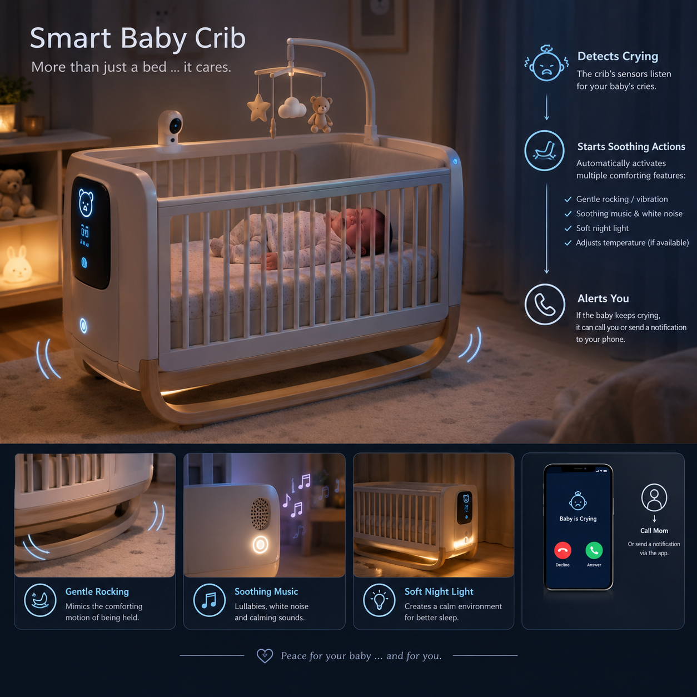
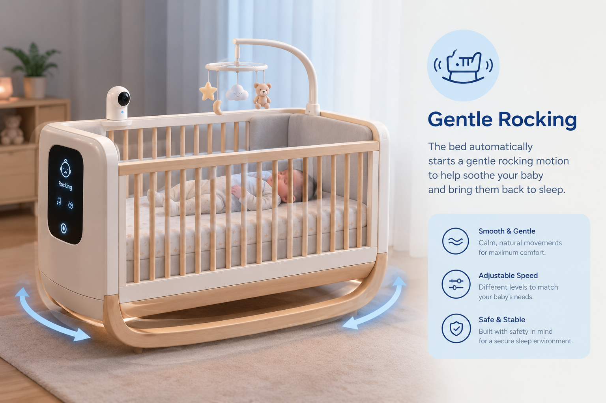

Our Smart Baby Bed is designed to make caring for your baby easier, safer, and more comfortable. Using smart sensors, the bed can detect when your baby starts crying and respond automatically with gentle rocking, soothing music, and a soft night light. If the baby continues crying, the system can notify or call the mother through a connected mobile application. With smart technology working in the background, parents can have greater peace of mind while their baby enjoys a calm and comfortable sleeping environment.

Cry Detection
The smart bed uses built-in sensors and a microphone to detect when the baby starts crying. The system analyzes the sound to distinguish the baby’s cry from background noise. Once crying is detected, the bed can automatically activate soothing features such as gentle rocking and calming music, while also notifying the mother through the connected mobile application.
Gentle Rocking
When the smart bed detects that the baby is crying, it automatically starts a gentle rocking motion to help calm the baby. The movement is smooth and adjustable, providing a comfortable and soothing experience that can help the baby relax and return to sleep without requiring immediate intervention from the parents.

Soothing Music
The smart bed can play soft and calming music when the baby starts crying. Gentle melodies and relaxing sounds help create a peaceful environment, making it easier for the baby to calm down and fall back asleep. The music can also be adjusted or stopped automatically once the baby becomes quiet.
Soft Night Light
The smart bed includes a soft night light that provides gentle illumination without disturbing the baby’s sleep. When the baby starts crying during the night, the light can turn on automatically, creating a calm and comfortable environment. The brightness can be adjusted to help parents check on their baby without turning on the main room lights.